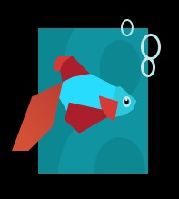

Microsoft выпустила на днях очередной публичный релиз Windows 8 Consumer Preview. Среди нововведений, наряду с описанными в статье Представление Windows 8 Consumer Preview, лого при загрузке системы:

Чувства вызывает неоднозначные , но настроение поднято
ΞρεΤΙκ